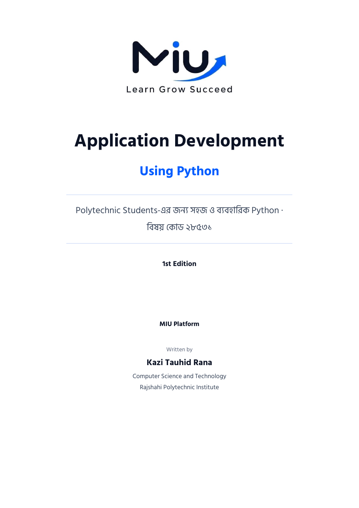

বাকাশিবো · ডিপ্লোমা ইন ইঞ্জিনিয়ারিং · বিষয় কোড ২৮৫৩১
Application Development
Using Python
পুরো syllabus — Unit 1 থেকে Unit 11 — সহজ বাংলায়। প্রতিটা উদাহরণের কোড চালিয়ে যাচাই করা, প্রতিটা অধ্যায়ের শেষে বিগত বছরের বোর্ড প্রশ্নের উত্তর।

1class Student:
2 def __init__(self, name, cgpa):
3 self.name = name
4 self.__cgpa = cgpa
5
6s1 = Student("Rahim", 3.75)
7print(s1.name, "joined MIU")
Rahim joined MIU
বইটা যেভাবে পড়াবে
- উদাহরণ ধরে ধরে। প্রতিটা ধারণার সাথে সমস্যা, কোড, output আর লাইন-বাই-লাইন ব্যাখ্যা।
- ভুল থেকে শেখা। নতুনরা যে ভুলগুলো সবচেয়ে বেশি করে, পাশাপাশি ভুল আর সঠিক কোড।
- পরীক্ষার কথা মাথায় রেখে। ২০২২–২০২৫ সালের সব বোর্ড প্রশ্ন, গুরুত্ব অনুযায়ী ★ দিয়ে, খাতায় লেখার মতো উত্তরসহ।
- প্রতিটা টপিকের ভিডিও। প্রতিটা টপিকের সাথে YouTube থেকে বাছাই করা বাংলা ভিডিও ক্লাস — যেটা পড়ছ, সেটাই দেখে নাও।
- পাতাতেই কোড চালাও। প্রতিটা উদাহরণের পাশে "চালাও" বাটন, আর নিজে লিখে চালানোর জন্য আলাদা কোড রানার — কিছু install করতে হবে না।
- একটা পূর্ণ প্রকল্প। শেষ অধ্যায়ে পুরো বইয়ের জ্ঞান দিয়ে বানানো Student Result Management System।
অধ্যায়সমূহ
Syllabus-এর ক্রমেই সাজানো — একটার পর একটা পড়লে সবচেয়ে ভালো বুঝবে।
- অধ্যায় ১Python Functionsdef, argument, pass by value/reference, datetime
- অধ্যায় ২File Operation in Pythonfile mode, open ও close, read ও write
- অধ্যায় ৩Module, Package and Application Softwaremodule, package, application software-এর পরিচয়
- অধ্যায় ৪Basics of OOPclass, object, constructor, self
- অধ্যায় ৫Four Pillars of OOPinheritance, encapsulation, polymorphism, abstraction
- অধ্যায় ৬Python Iterator, Generator and Decoratorsiter ও next, yield, @decorator
- অধ্যায় ৭Exception and Error Handling in Pythontry, except, else, finally, raise
- অধ্যায় ৮Logging in Pythonlevel, handler, formatter, basicConfig
- অধ্যায় ৯Unit Testing in Pythonunittest, TestCase, assertion
- অধ্যায় ১০Python RegEx (Regular Expression)pattern, meta character, search, findall, sub
- অধ্যায় ১১Application Softwareশ্রেণিবিভাগ, বৈশিষ্ট্য, কাজ ও একটি পূর্ণ প্রকল্প
- পরিশিষ্টবিগত বছরের বোর্ড প্রশ্ন ও সাজেশন২০২২–২০২৫ সালের প্রশ্নপত্র, বিশ্লেষণ ও সাজেশন
শীঘ্রই আসছে
বইটার PDF সংস্করণ
পুরো বই অফলাইনে, যেকোনো ডিভাইসে পড়ার জন্য PDF তৈরি হচ্ছে। দাম কত হবে — সেটা ঠিক হবে তোমাদের মতামত দেখেই। নিতে চাইলে নাম লিখে রাখো, তৈরি হলেই জানানো হবে।
বইটা কেমন লাগল?
তোমার রিভিউ আর পরামর্শে পরের সংস্করণ আরও ভালো হবে। কোথাও ভুল পেলে সেটাও জানাও।